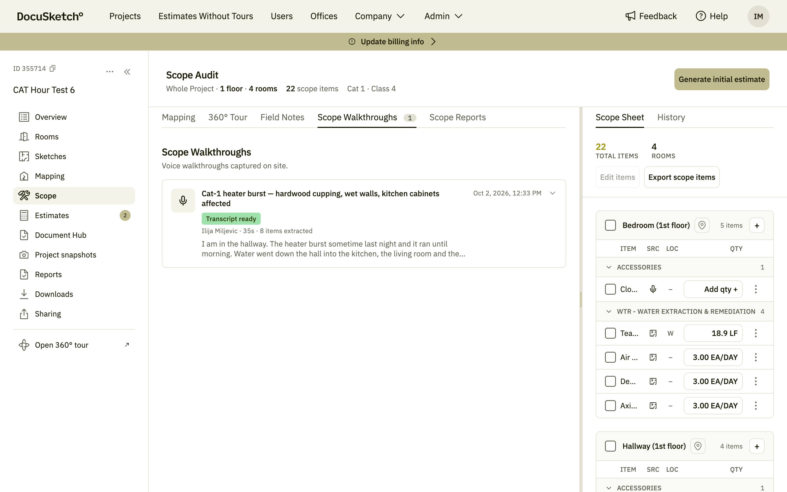
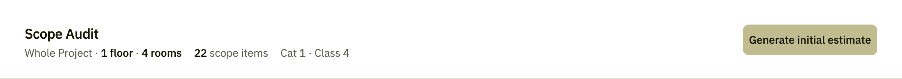
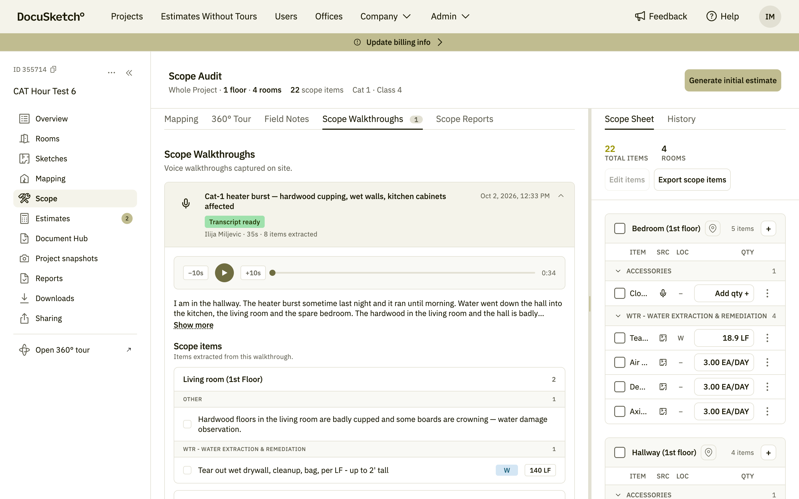
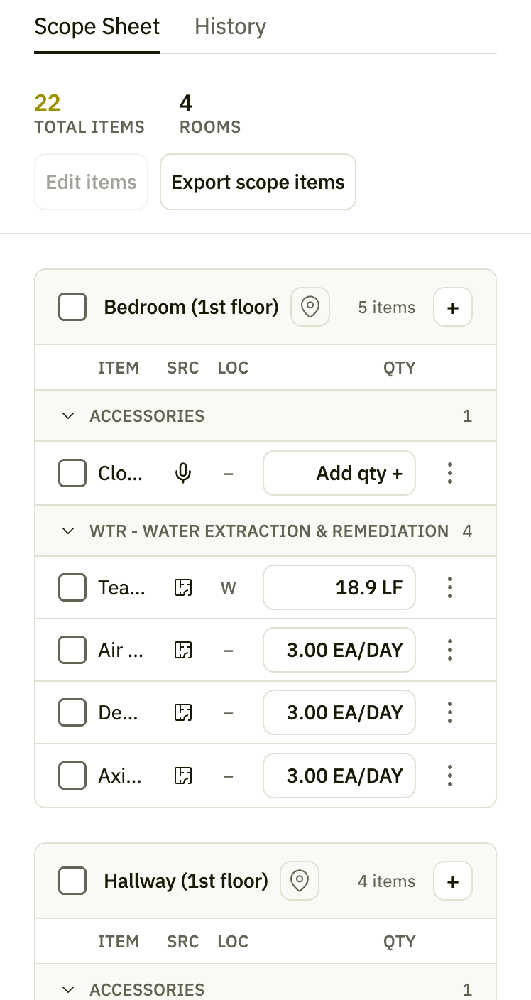
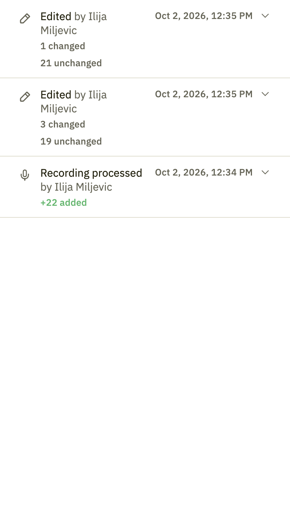
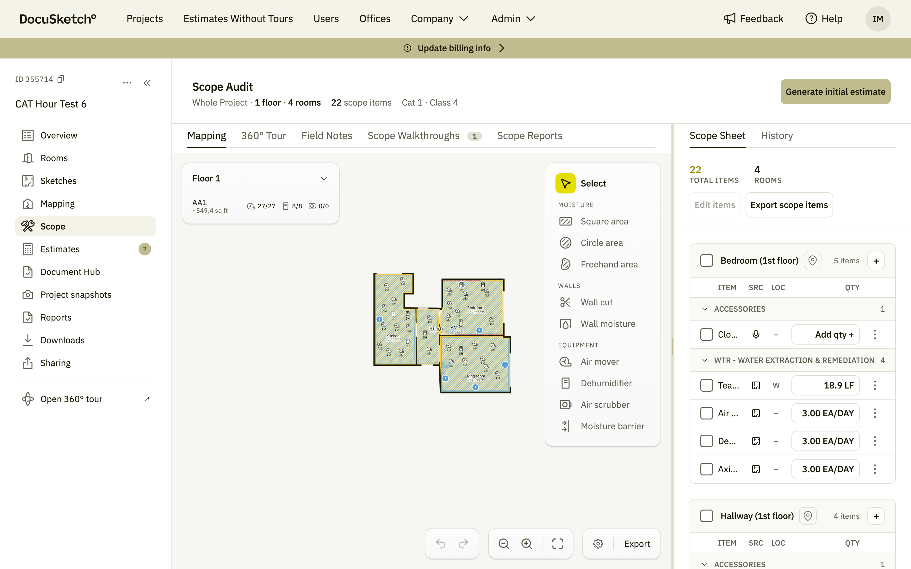
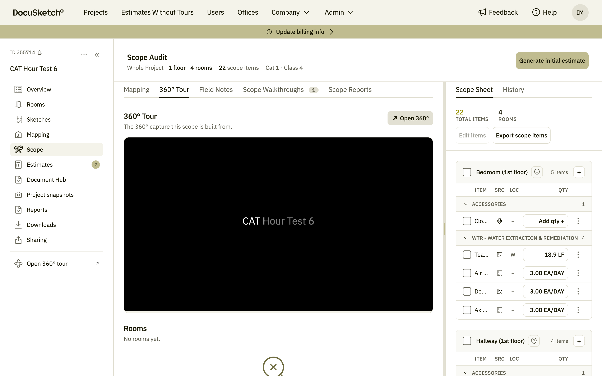
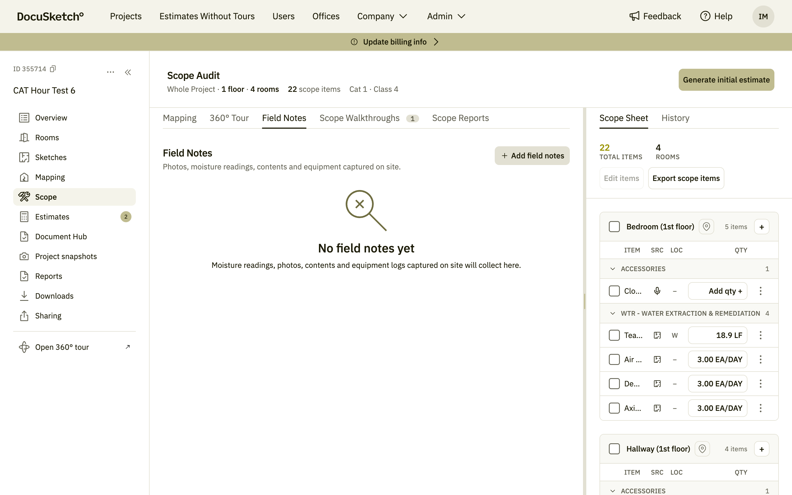
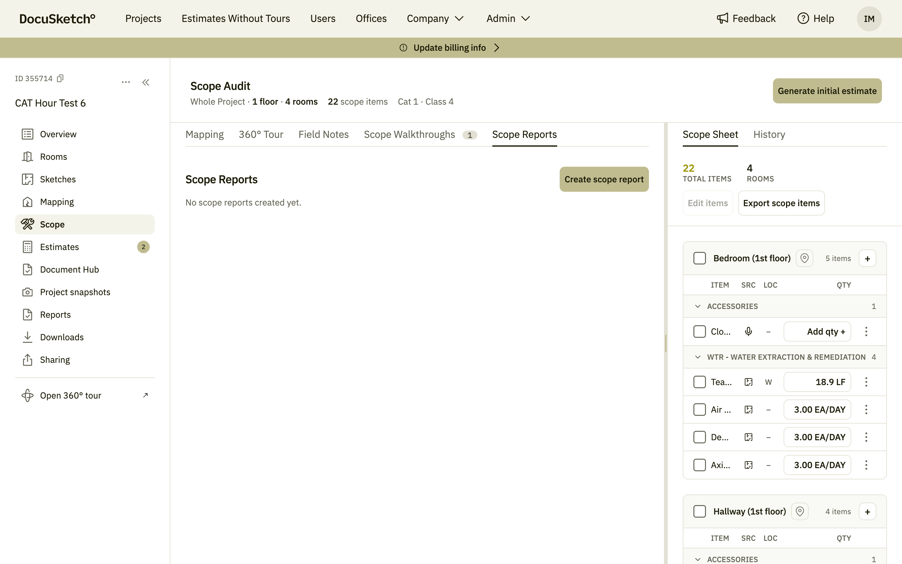
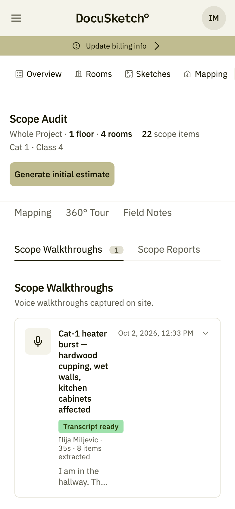

Scope Walkthrough
Walk the property and say what you see. DocuSketch turns the recording into structured scope items — grouped by room, traceable to the sentence that produced them, and ready to become an estimate.
1. What a Scope Walkthrough is
A Scope Walkthrough is the scope, spoken out loud. You walk the property with your phone and describe what you see — the room you are in, the damage, what has to come out, what has to be dried. DocuSketch records it, transcribes it, and turns the description into scope items: structured lines with a category, a location and a quantity, each one traceable back to the sentence that produced it.
The point is to stop the scope from living in two places. Instead of notes on a phone that somebody retypes in the office hours later, what you said on site becomes the scope the estimate is built from — while you are still standing in the room, where a second look is free.
What it produces
- An audio recording, kept with the project, that anybody reviewing the scope can play back.
- A transcript of what was said.
- Scope items extracted from that transcript, grouped by room and by category.
- A scope sheet for the whole project, which is what the Initial Estimate is generated from.
Capture the property, mark what the loss touched, walk the scope — then estimate it. A walkthrough is the step that turns observations into something the estimate engine can price. See Initial Estimate for what happens next.

- File
- screenshots/sw-01-workbench.png
- Where
- Project → Scope → Scope Walkthroughs
- Must show
- The audit header, the capture tabs, a walkthrough card and the Scope Sheet panel
2. Before you start
A walkthrough needs very little: a project and the DocuSketch mobile app. Everything else is optional, and each optional piece makes the result better.
| You need | Why |
|---|---|
| A project | The walkthrough is attached to it, and so is everything extracted from it. |
| The mobile app | Recording happens on the phone. The web portal is where the result is reviewed. |
| A sketch (recommended) | Measured rooms turn spoken quantities into real ones: "tear out the wet drywall two feet up" becomes a linear-foot number. |
| Marked affected areas (recommended) | Tells DocuSketch which rooms the loss touched, so items land in the right place. |
Name the room you are in before you describe the damage. The extraction uses that to decide where an item belongs — and a scope item in the right room needs no fixing later.
3. How it works, end to end
The first three steps happen without you: once the recording stops, DocuSketch transcribes it and extracts the items. The card in the portal tells you where it got to — Transcript ready once the text is in, with a count of how many items came out of it.
The last two are yours: check what was extracted, fix what the extraction got wrong, and generate the estimate.
4. Recording a walkthrough
Mobile — screenshots pendingRecording happens in the DocuSketch mobile app, on the project you are working. You start a walkthrough, wait for the countdown, and talk your way through the property.
What to say
- Name the room first. "I am in the hallway" — then describe it.
- Describe the damage plainly. "The hardwood in the living room is badly cupped and some boards are crowning."
- Say what the work is. "Tear out the wet drywall, two feet up, all through."
- Give quantities when you know them, and leave them out when you do not — the sketch fills in what it can measure.
One long walkthrough and several short ones work equally well; every recording on the project feeds the same scope sheet. Short per-room recordings are easier to re-listen to later.
The mobile capture flow is described here from the product specs, not from screenshots. The app screens — start, countdown, recording, the extracted-items review — will be added when the mobile round is captured.
5. The Scope screen
In the portal, everything about scope lives on the project's Scope tab. The screen is in three bands.
The audit header
Scope Audit is the one-line state of the scope: what is covered (whole project or a part), how many floors and rooms, how many scope items exist, and the water category and class. Beside it sits Generate initial estimate — the hand-off to the estimate, from the screen where you just satisfied yourself that the scope is right.

- File
- screenshots/sw-10-audit-header.png
- Where
- Project → Scope, the header band
- Must show
- Coverage, floors, rooms, item count, Cat/Class, Generate initial estimate
The capture panel
On the left, a tab per kind of capture: Mapping, 360° Tour, Field Notes, Scope Walkthroughs and Scope Reports. The walkthroughs tab carries a count, so you can see at a glance whether anybody recorded anything.
The Scope Sheet panel
On the right, the scope itself — every item on the project, whatever produced it. The panel stays put as you move between capture tabs, which is the point: you are always comparing a source against the scope it produced.
6. Reviewing a walkthrough
The Scope Walkthroughs tab lists every recording on the project, newest first. Collapsed, a card shows the walkthrough's title, its state, who recorded it, how long it runs, how many items were extracted, and the first line of the transcript.
Expanding a card
Expand it and you get three things:
- The audio — play, pause, and jump 10 seconds backwards or forwards. Only one walkthrough plays at a time.
- The transcript — the full text of what was said, clamped until you choose Show more.
- Scope items — what was extracted from this recording, grouped by room and then by category, with the location and quantity each item ended up with.
This is the part worth reading when an item in the scope sheet surprises you. The transcript is the evidence: if the extraction added "tear out wet drywall, up to 2' tall" you can see the sentence that asked for it, and hear the technician say it.

- File
- screenshots/sw-02-walkthrough-expanded.png
- Where
- Scope → Scope Walkthroughs → expand a card
- Must show
- The audio player, the transcript, and the extracted scope items grouped by room
7. The Scope Sheet
The Scope Sheet is the project's scope in one place: how many items exist, across how many rooms, and what each one is. Items are grouped by room, and inside a room by category — accessories, water extraction and remediation, and so on — with a count beside each heading.
The columns
| Column | What it tells you |
|---|---|
| Item | What the work is. |
| SRC | What produced it — a microphone for a walkthrough, a sketch icon for something measured. |
| LOC | Where on the room it applies: walls, floor, ceiling, perimeter. |
| QTY | How much, with its unit — or Add qty when nothing could be derived. |
Add qty is the one to look for. It means the item is real but nobody — neither the walkthrough nor the sketch — produced a number for it, and the estimate cannot price what it cannot count.
What you can do here
- Add an item to a room with the + on its header.
- Edit items opens the sheet for bulk editing.
- Export scope items takes the scope out of DocuSketch as a file.
- History, beside the Scope Sheet tab, shows how the scope changed over time.

- File
- screenshots/sw-03-scope-sheet.png
- Where
- Scope → the right-hand panel
- Must show
- Totals, rooms, the ITEM / SRC / LOC / QTY columns and an Add qty row

- File
- screenshots/sw-08-history.png
- Where
- Scope → Scope Sheet panel → History
- Must show
- The history view of the scope sheet
8. The other capture tabs
A walkthrough is one source among several, and the Scope screen keeps the rest a click away — so the scope can be checked against whatever documented it.
Mapping
The floor plan with the loss drawn on it: moisture areas, wall cuts and wall moisture, and the equipment placed in each room — air movers, dehumidifiers, air scrubbers, moisture barriers. The header counts what is mapped against what exists, so an unfinished map is visible rather than assumed.

- File
- screenshots/sw-07-mapping.png
- Where
- Scope → Mapping
- Must show
- The floor plan with the moisture / walls / equipment tools
360° Tour
The captured tour, in context. When a scope item is contested, the tour is where you go to look at the room again without driving back to it.

- File
- screenshots/sw-05-tour.png
- Where
- Scope → 360° Tour
- Must show
- The tour embedded beside the scope sheet
Field Notes
Photos, moisture readings, contents and equipment logs captured on site. Add field notes is there for anything the walkthrough did not say out loud.

- File
- screenshots/sw-04-field-notes.png
- Where
- Scope → Field Notes
- Must show
- The tab with its empty state or captured notes
Scope Reports
A scope report is the scope written up as a document you can send. Create scope report builds one; the tab lists the ones already created.

- File
- screenshots/sw-06-scope-reports.png
- Where
- Scope → Scope Reports
- Must show
- The create action and the list (or its empty state)
9. From scope to estimate
When the scope sheet reads the way the property looked, press Generate initial estimate in the audit header. Everything on the sheet becomes the input to the estimate: the items, their rooms, their locations and their quantities.
Worth checking first
- Items still showing Add qty — give them a quantity, or accept that the estimate will have to.
- Items in the wrong room — fix them here; it is cheaper than moving line items later.
- Rooms with no items at all — either genuinely untouched, or nobody described them.
- The category and class in the audit header — they drive a lot of what gets generated.
What happens after the button is covered in Initial Estimate: choosing a scope strategy, reviewing the generated line items, and exporting.
A line item generated from a walkthrough keeps the connection: in the estimate, its justification cites the field note it came from — often quoting the sentence verbatim.
10. On a phone
The Scope screen works at phone width: the audit header and Generate initial estimate stack at the top, the capture tabs wrap onto two rows, and the walkthrough cards run full width below them. The Scope Sheet follows underneath rather than beside, so reviewing a long scope is still easier on a desktop.

- File
- screenshots/sw-09-mobile.png
- Where
- Portal at phone width, Scope → Scope Walkthroughs
- Must show
- The stacked header, the wrapped tabs and a walkthrough card
11. FAQ and troubleshooting
To extend from support ticketsMy walkthrough has no scope items.
Check the card's status first — extraction runs after transcription, so an item count appears once the transcript is ready. If the transcript is there and the count is still zero, the recording probably described the property without naming work to do.
An item landed in the wrong room.
Move it in the Scope Sheet. To stop it happening again, name the room out loud before describing it — the extraction follows what it hears.
Why do some items say "Add qty"?
Nothing produced a number: the walkthrough did not say one, and the sketch could not measure it. Type the quantity, or let the estimate derive one from the room's measurements.
Can I record more than one walkthrough?
Yes, and for a large loss it is better. Every recording on the project feeds the same scope sheet, and short per-room recordings are easier to find your way back to.
Who can hear the recording?
Anybody with access to the project. The audio, the transcript and the extracted items are all part of the project's record.
12. Glossary
| Term | Meaning |
|---|---|
| Scope walkthrough | A voice recording of the scope, made on site, with its transcript and extracted items. |
| Scope item | One piece of work in the scope — a category, a location and a quantity. Not yet priced. |
| Scope Sheet | All of a project's scope items, grouped by room. |
| Scope Audit | The header summary: coverage, floors, rooms, item count, category and class. |
| SRC | The source column — what produced an item, a walkthrough or a measurement. |
| LOC | Where on the room an item applies: floor, ceiling, walls, perimeter. |
| Field note | A photo, moisture reading, contents or equipment log captured on site. |
| Scope report | The scope written up as a sendable document. |
Shot list
Working aid — not part of the articleCounting screenshots…
| # | File | Where to capture | Status |
|---|
For the team — remove before publishing
Open questions
- Naming. The portal says Scope Walkthroughs, the screen is Scope, the header is Scope Audit, and internally the screen is the Scope Workbench. Which names does the article teach?
- Section 4 (recording on mobile) is written from the specs, not from the app. Who reviews it, and when can we capture the app screens?
- Edit items was disabled on the sandbox project used here, so the bulk-edit flow is named but not described. Under what conditions is it enabled?
- Field Notes and Scope Reports were both empty on this project — their screenshots show empty states. Worth re-capturing on a project that has real ones.
- The Scope screen ships behind the
scopePortalflag. Is it on for all customers now, or still rolling out? The article assumes it is what users see. - Does the audio recording have a retention policy worth stating in the FAQ?
Screenshot conventions
- All shots come from sandbox project CAT Hour Test 6 — the same project as the Initial Estimate article, so the two read as one story.
- Browser at 1440×900, 2× density, light theme; the mobile shot at 390×844.
- Re-run with
SHOTS=../scope-walkthrough/screenshots node capture.mjs run <steps.json>from the Initial Estimate folder.